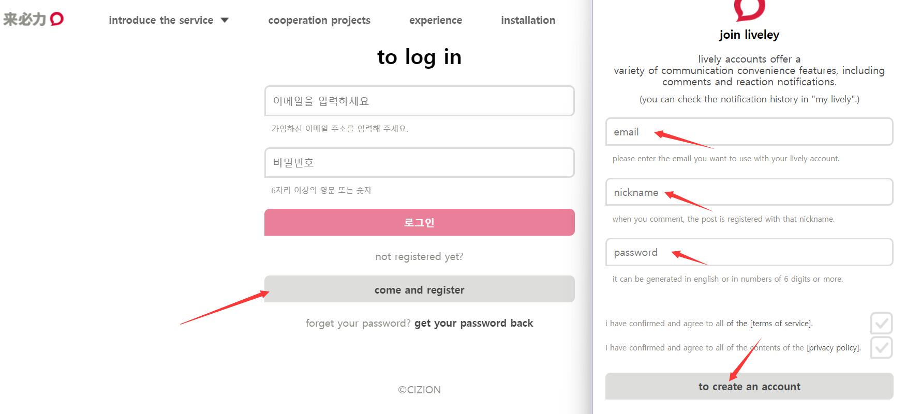
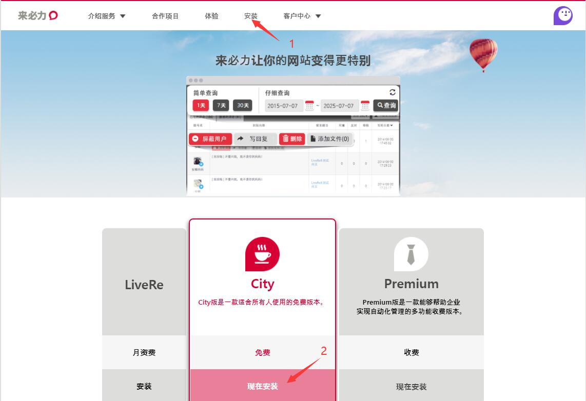
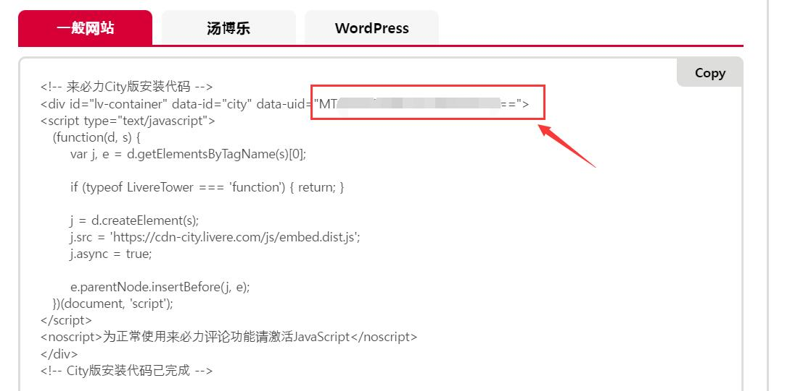
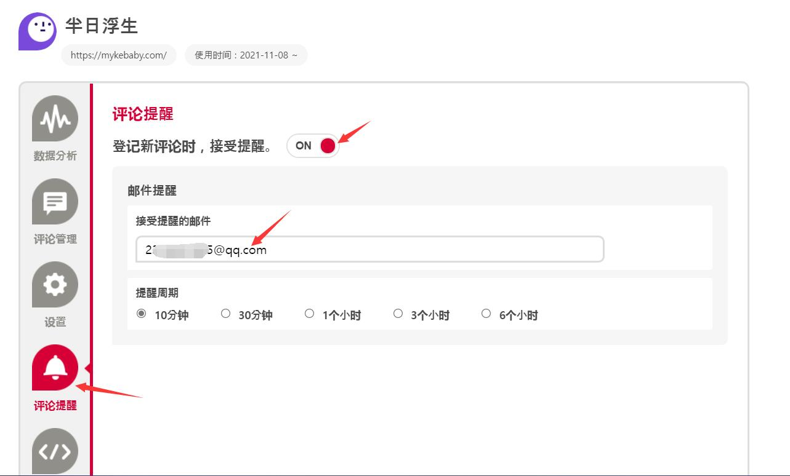

博客优化：添加评论
一篇心得，与人分享，怎么可以没有讨论呢，因此一篇文章的评论功能是必不可少的。
- 插入来必力评论系统
来必力评论系统
注册来必力 账号
验证邮箱就可以完成验证

登录来必力账号，选择安装，安装免费版

第一次下侧会出现一个框让你填写网站信息，然后获取代码就行。注意网络链接是你的博客链接。
复制data-uid代码

4.配置主题文件
在/themes/next/_config.yml,中找到livere_uid,粘贴代码
1 | livere_uid: "uid代码" |
设置提醒

测试
在根目录下打开Git Bash,输入
1 | hexo clean&&hexo g&&hexo d |